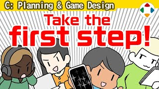
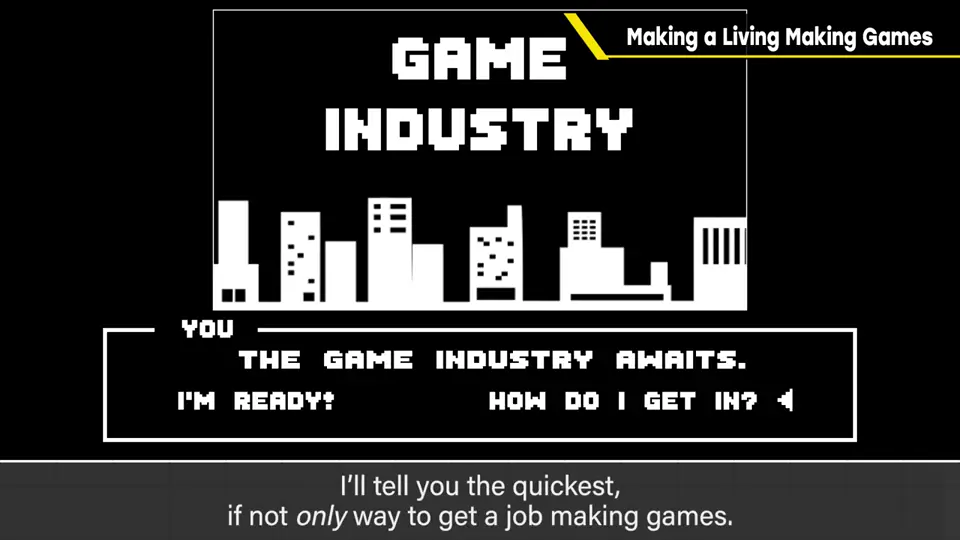
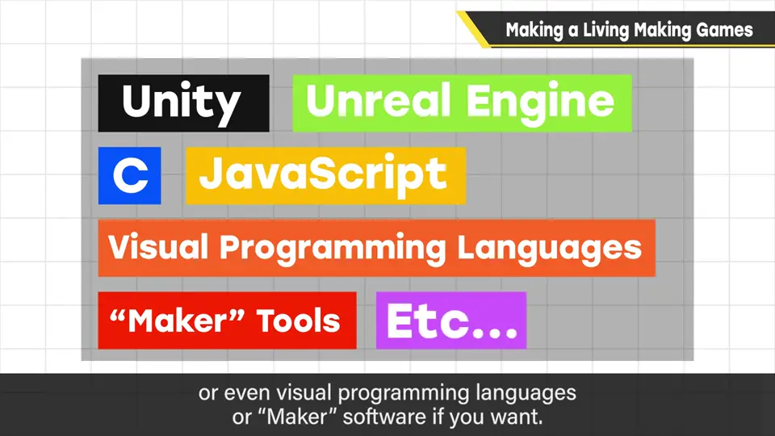
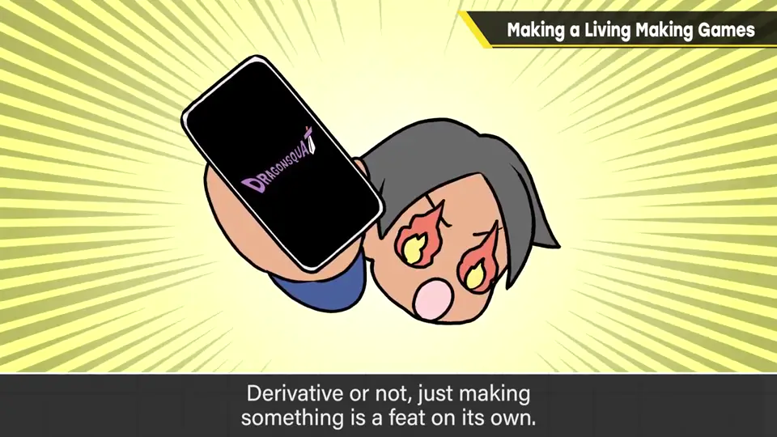
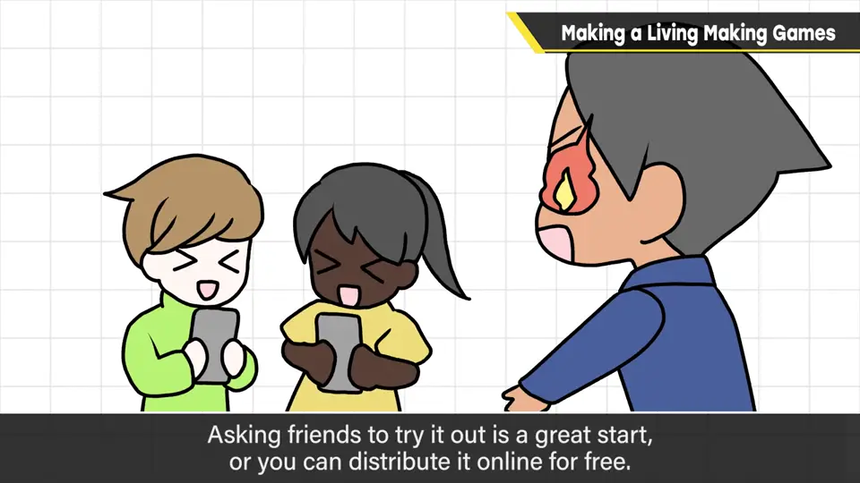
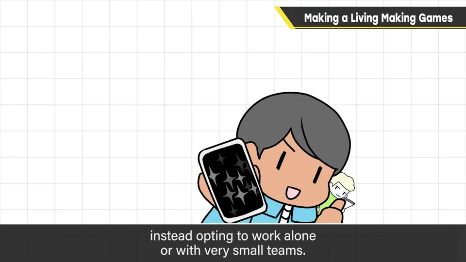

速览
「怎样才能进游戏业？」这个问题一直很多，很多时候提问者没设想具体职种，只是模糊地想把喜欢的事当职业——樱井不觉得这样天真，谁一开始都是如此，他自己也没想过做游戏能成为工作。除了美术、作曲等专业职，进入游戏业最短、甚至几乎唯一的方法是：自己做游戏。如今手段很多：Unity、Unreal Engine、C、JavaScript、可视化编程语言、「制作大师」类工具、学校都行。即使想当策划，也一定需要程序思维；做游戏时哪里困难、怎么解决，能学到的经验多如山。第一个作品模仿别的游戏也行——能做出来就了不起。做到满意后让别人玩：请朋友玩、免费发布，有自信也可以卖（也许还能积累宣传经验）。看反应，改进该反省的地方，或把经验用于下一作。有一定手感后，把作品连同应聘材料寄给游戏公司——稍微不符合应聘条件也无妨，好的人才厂商求之不得。但寄去的游戏只是模仿就难了，要加入某处闪光的原创性（怎么增加乐趣、发想法等本节目会一一介绍）。想做游戏的人极多，要设法脱颖而出。进了公司就正式成为专业人士；反过来，也可以不进公司，一个人或少数人继续制作——一个人做，销售额独享，比领薪水更适合的人不少。小规模也好，自己做游戏对把游戏当职业不可或缺；挑战后做不到，也许也能就此死心。总之先做做看。
1. 怎样进入游戏业？ 0:03
「怎样才能进游戏业？」这个问题一直很多。很多时候并没设想具体职种，只是模糊地想把喜欢的事当职业。樱井并不觉得这样天真——谁一开始都是如此，他自己也没想到做游戏能成为工作。

2. 自己做一款游戏 0:45
- 如今手段很多：Unity、Unreal Engine、C、JavaScript、可视化编程语言、「制作大师」类工具，或者学校都可以。
- 即使想当策划，也一定需要程序思维；做游戏时哪里困难、该如何解决——能学到、能积累的经验多如山。
- 第一个作品模仿某款游戏也没关系：能做出来就了不起。


3. 给人玩，再投给游戏公司 1:27
- 做到满意后让别人玩：请朋友玩、免费发布，有自信也可以卖——方法很多，也许还能获得宣传经验。
- 看反应，改进需要反省的地方，或把经验用在下一作。
- 有了一定手感，把作品连同应聘材料寄给游戏公司。稍微不符合应聘条件也无妨：好的人才，厂商求之不得。

但寄去的游戏如果只是模仿就难了：要加入某处闪光的原创性。如何增加乐趣、如何发想，本节目会一一介绍。想做游戏的人极多，要设法脱颖而出。
4. 另一条路：独立制作 2:48
进了游戏公司就正式成为专业人士。反过来，也可以不进公司，一个人或少数人继续制作：一个人做，销售额就独享——觉得这比领薪水更适合自己的人不少。

自测题
1. 樱井说进入游戏业最短、几乎唯一的方法是什么？
自己做游戏（美术、作曲等专业职除外）。 0:33
2. 为什么想当策划也要自己做游戏？
策划也一定需要程序思维；做游戏时能学到哪里困难、怎么解决，积累大量经验。 1:02
3. 把作品投给游戏公司时要注意什么？
先给人玩并改进；稍不符合应聘条件也可以投；但不能只是模仿，要加入闪光的原创性。 2:05